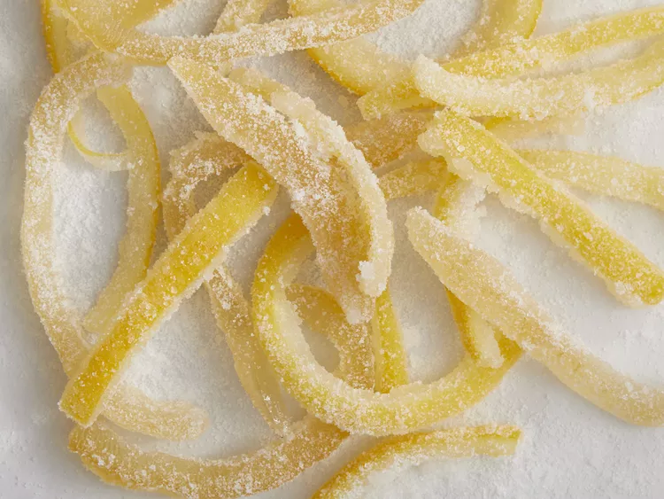

Candied Lemon Peel

Description
This candied lemon peel recipe is a good way to use up lemon rind and goes well with coffee or dessert. It really does taste like candy, and you can use this method for any citrus fruit. If you use oranges you can add brandy, cloves, or other spices to the mixture. Chop it up and put it in cakes or cookies, or just eat it by itself.
Ingredients
- 3 lemons
- 8 cups cold water, or as needed
- 2 cups white sugar, or as needed
Steps
- Cut lemons into slices about 1/4-inch thick and remove the fruit pulp. Cut the rings in half so the peels are in long strips.
- Bring water and lemon peels to a boil in a small pan. Drain water, and repeat with fresh cold water. Repeat the boiling step three times (see Editor's Note). Drain and set peels aside.
- Combine 2 cups fresh water with 2 cups sugar. Bring to a boil, stirring to dissolve the sugar. Reduce heat to low and stir in citrus peels; simmer until the white pith is translucent. Store peels in syrup, refrigerated, to keep them soft, or allow them to dry. Toss dry candied peels in additional sugar and store in an airtight container at room temperature.